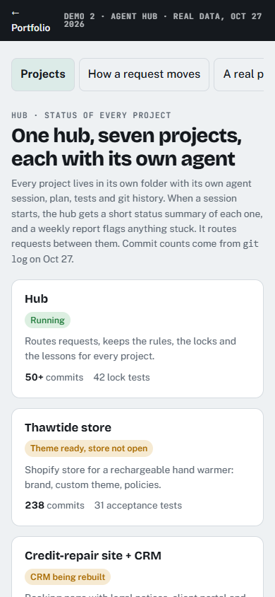

agent hub.
The setup I use to run every project with AI agents without losing control.
AI agents are fast, but they’ll say “done” without proof, change their own rules or wander into another client’s folder. So I built the guardrails.
- Claude Code
- Node.js
- JSON
- Git
- PowerShell
- Bash

What I set out to do
One owner decides, the agents do the work. Risky actions get blocked by code, not by asking nicely, and nothing is finished until someone other than the builder has tested it.
Decisions I made
- Locks in code, not in the prompt. A Node.js hook reads every command before it runs and blocks or asks.
- The builder never approves itself. A separate reviewer agent tests like a customer and can’t fix anything.
- Big work starts with a written plan, tests first, and my yes before any code.
- Each project only sees itself. To ask another project for something, an agent leaves a note in its inbox.
- Mistakes become rules. The same cause twice moves the fix up a level: rule, then tool, then lock.
- Nothing gets deleted. Old work moves to an archive folder.
How it works
Every command an agent wants to run passes through a hook I set up in Node.js before it reaches the files.
When the same mistake happens twice
A lesson starts as a written rule. If it happens again, it becomes a tool, and then a lock in code.
- Mistakelogged with its cause
- Rulewritten down
- Toola script that checks it
- Lockenforced by the hook
Under the hood
What I used, and why.
The plan, and where it stands
- DoneThe base: global rules, locks, reviewer and researcher agents, a project template and one status page for everything.
- DoneLocks that ask instead of only blocking: money is never allowed; sending, keys and other folders ask me.
- DoneRead-only access to a live site, tested against the reviewer’s attack cases until none got through.
- In progressFewer false alarms, and saving every reviewer verdict automatically.
The hub
The project list, how a request moves, what the locks block, the reviewer and my mistakes log.
Both screens are live: click, scroll and type inside them.
What I can’t claim yet
On Windows there’s no sandbox: the locks read what the agent writes, not what a program does inside. The real defence is not keeping real keys on the machine. I say that plainly in my own notes too.